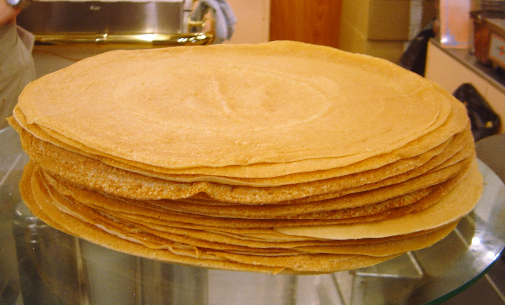

Crepes

Description
A crêpe or crepe is a type of very thin pancake. Crêpes are usually of two types: sweet crêpes (crêpes sucrées) and savoury galettes (crêpes salées). Crêpes are served with a variety of fillings, from the simplest with only sugar to flambéed crêpes Suzette or elaborate savoury galettes.
Crêpes originate in Brittany, a region in the west of France; the consumption is widespread in France, Belgium, the Netherlands, Canada, and many parts of Europe, North Africa, North America, Lebanon, Mexico, Brazil, Argentina, and India.
Ingredients
- 140g plain flour
- 200ml whole milk
- 2 eggs
- 25g unsalted butter, melted, plus a little extra for greasing
Steps
- Sift the flour with a pinch of salt into a medium-size bowl and make a well in the middle. Mix the milk and 100ml of water together. Break the eggs into the well and start whisking slowly. Add the milk and water in a steady stream, whisking constantly and gradually incorporating the flour as you do so.
- Whisk until the batter is smooth and all the flour has been incorporated. Set the batter aside to rest for 30 mins, then whisk the melted butter into the batter.
- Heat the pan over a medium heat. Very lightly grease the pan with melted butter. Using a ladle, pour roughly 2 tbsp of batter into the pan and swirl it around so the bottom of the pan is evenly coated. You want to use just enough batter to make a delicate, lacy pancake. Cook the pancake for about 45 secs on one side until golden and then using a palette knife or fish slice, flip the pancake over and cook the other side for about 30 secs until it freckles.
- Slide the pancake out of the pan and either serve immediately or stack on a plate with baking parchment in between. Continue until all the batter is used up.